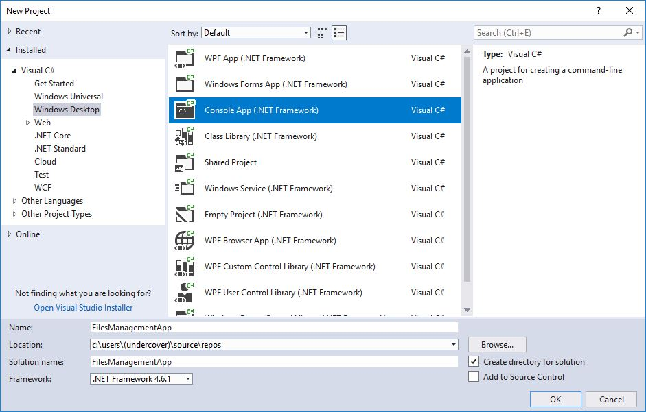
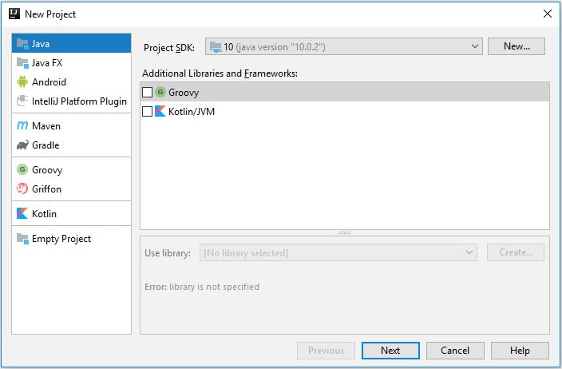
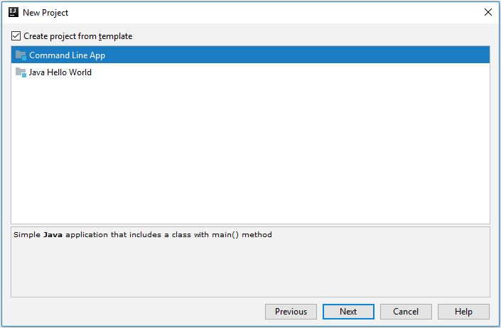
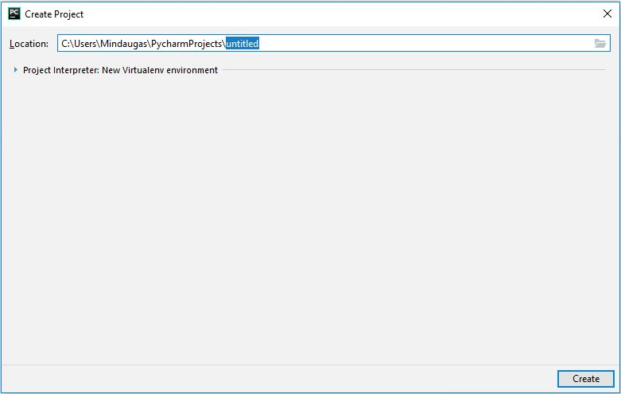
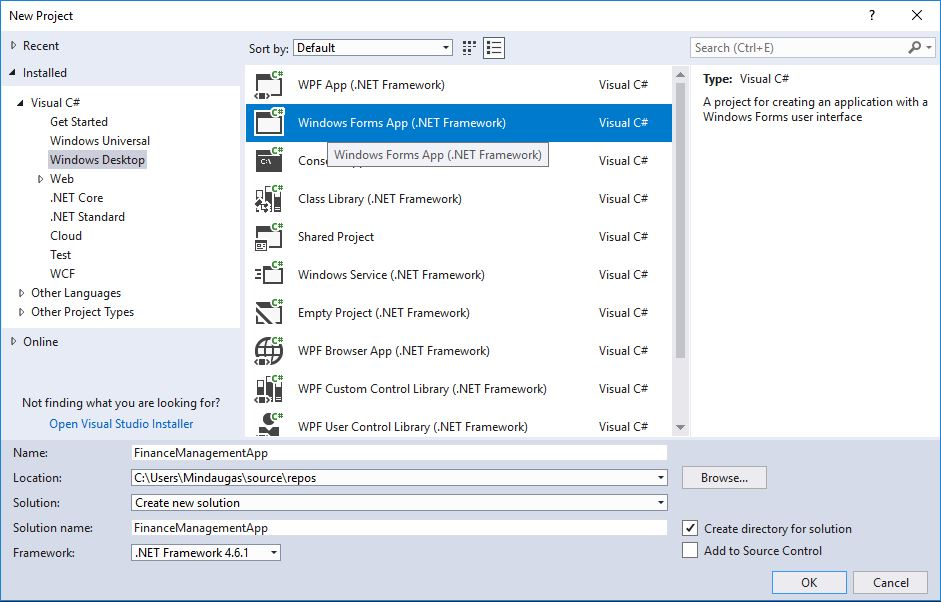
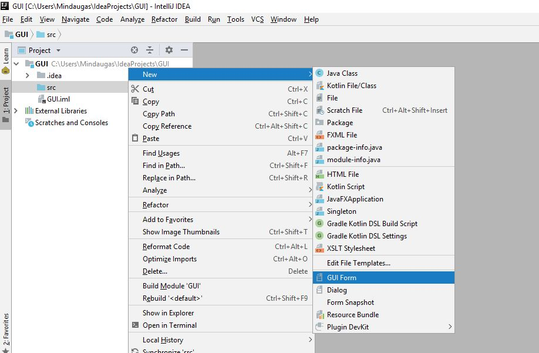
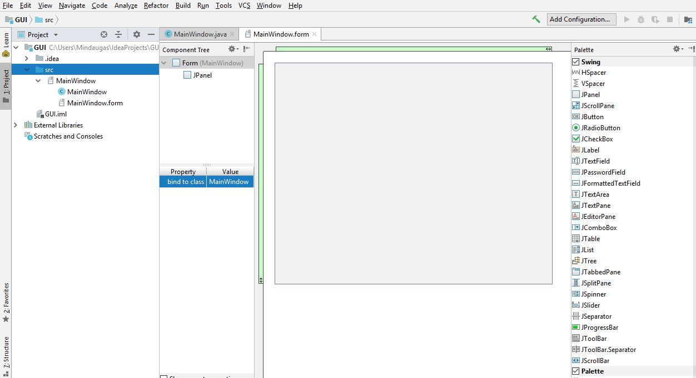

Vienareikšminško atsakymo nėra. Štai keli šaltiniai, pateikiantys programavimo kalbų reitingus ir, galbūt, palengvinantys apsisprendimą dėl programavimo kalbos (-ų) pasirinkimo:
Spaudžiame File -> New -> Project..., pasirenkame Console App (.NET Framework), suteikiam projektui prasmingą pavadinimą ir spaudžiame OK (1 pav.).

1 pav. Naujo projekto kūrimas Visual Studio aplinkoje.
Spaudžiame File -> New -> Project..., įsitikiname, kad lango dešinėje juostoje pasirinkta kategorija Java ir viršuje nustatytas tinkamas SDK, tada spaudžiame Next (2 pav.).

2 pav. Naujo projekto kūrimas IntelliJ IDEA aplinkoje.
Atsidariusiame lange pažymime Create project from template ir pasirenkame Command Line App (3 pav.). Spaudžiame Next, atsidariusiame lange suteikiame projektui prasmingą pavadinimą ir spaudžiame Finish.

3 pav. Naujo projekto kūrimas IntelliJ IDEA aplinkoje (tęsinys).
Spaudžiame File -> New Project.... Atsidariusiame lange suteikiame projektui prasmingą pavadinimą ir spaudžiame Create (4 pav.).

4 pav. Naujo projekto kūrimas PyCharm aplinkoje.
Spaudžiame File -> New -> Project..., pasirenkame Windows Forms App (.NET Framework), suteikiam projektui prasmingą pavadinimą ir spaudžiame OK (5 pav.).

5 pav. Naujo projekto su grafine naudotojo sąsaja kūrimas Visual Studio aplinkoje.
Sukuriame projektą kaip nurodyta atsakyme į 6 klausimą, tik nieko nekeičiame 3 pav. lange. Tada ant projekto katalogo src spaudžiame dešinį pelės mygtuką ir tada New -> GUI Form (6 pav.).

6 pav. Naujo projekto su grafine naudotoj sąsaja kūrimas IntelliJ IDEA aplinkoje.
Atsidariusiame lange suteikiame formai pavadinimą, pasirenkame elementų išdėstymo stilių (angl. layout manager) ir pažymime (jei nepažymėta), kad sukurtų valdymo klasę (Create bound class). Spaudžiame OK, atsidariusiame lange galime pradėti kurti grafinę naudotojo sąsają (7 pav.).

7 pav. Grafinės naudotojo sąsajos kūrimas IntelliJ IDEA aplinkoje.
Sukuriame projektą kaip nurodyta atsakyme į 7 klausimą, ir į projekto failą importuojame tkinter biblioteką. Jos pagalba kuriama grafinė naudotojo sąsaja. Apie tkinter galite pasiskaityti oficialioje tkinter dokumentacijoje.